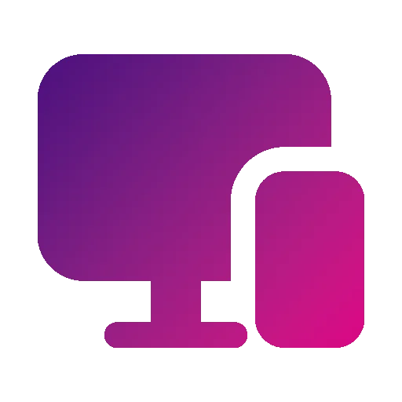
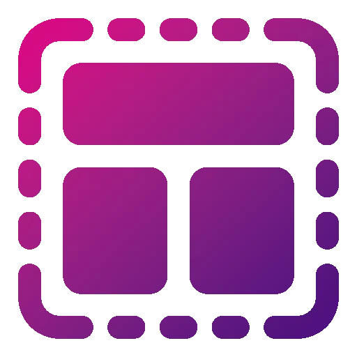
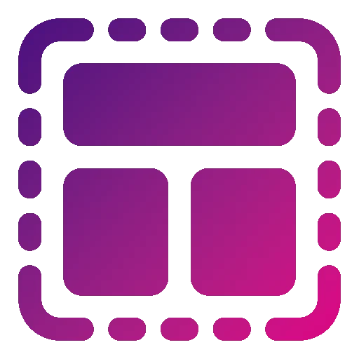
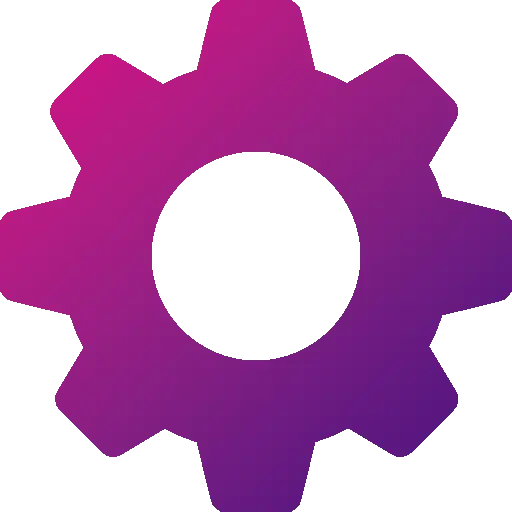

Hi, I'm
I'm a Front-end developer with special interest in clean and responsive design. Experienced in HTML and CSS for designing user-friendly and accessible web interfaces. Passionate about designing stunning web experiences.
I'm a Front-end developer with special interest in clean and responsive design. Experienced in HTML and CSS for designing user-friendly and accessible web interfaces. Passionate about designing stunning web experiences.


I design modern landing pages that grab attention, guide users clearly, and encourage them to take action, whether that’s signing up, contacting you, or learning more about your product.
I build business websites that clearly present your services, build trust with visitors, and help your brand look professional, reliable, and ready for real clients.
I create modern portfolios that showcase your work, skills, and personality in a clear and engaging way, helping you stand out and leave a strong first impression.
Want to build a simple site whether it be a business page, a portfolio, or a landing page? You are in the right place! My work focuses on creating clean, responsive websites with modern design and user-friendly interfaces. I carefully plan and optimize all my website designs for multiple devices. Clear and timely communication during the course of each project is extremely important to me, as is providing my clients with exactly what they want, without cutting corners or quitting before completing a project. My goal isn’t just to produce a website; it’s to create a quality, highly professional website for you.

I build websites that automatically adjust to different screen sizes, including desktops, tablets, mobile phones, and maybe even your smart fridge. The layout stays clean, readable, and easy to use on any device, so users get a smooth experience no matter how they visit your site.
My development process is fast and efficient, allowing projects to move forward quickly. At the same time, I make sure every detail is polished and the final result meets high quality standards.


A website shouldn’t feel static or boring. I carefully add animations, hover effects, and interactive elements that bring your pages to life while keeping everything smooth and user-friendly.

Not everything is about visuals. I make sure your pages actually do something useful, with some functionalities that fits your goals instead of pointless features.

SiliconVPN is a fictional VPN. Yes, it's not real, nor I'm planning on making it real. This page is made for my practice, and to demostrate my skills in landing pages. Hope you like it!

Logan'sCafe is a fictional Cafe website, again, it's fictional. This page is made to showcase my skills on building Business sites. I hope you like it!

This project is currently under development. Stay tuned.